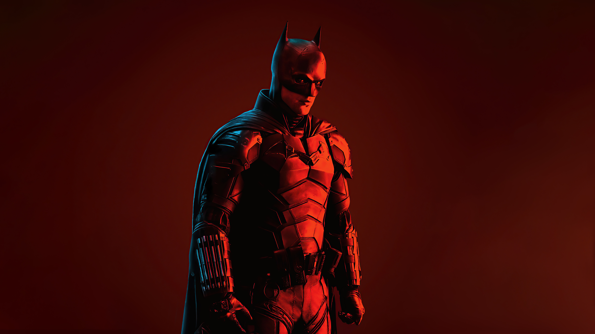
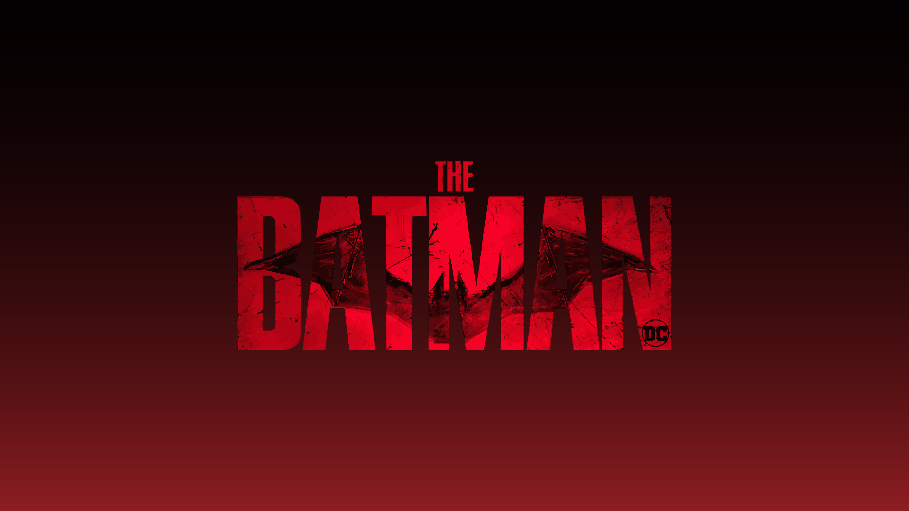

Galería
Sinopsis
Noticias

Villano de Superman en el universo de The Batman
Dos Caras ya tiene dos candidatos en secuela de The Batman

El tercer Batman además de Michael Keaton y Ben Affleck en The Flash
Andy Muschietti es confirmado como director para Batman: The Brave and the Bold
Primer Trailer de “The Pinguin”, el spin off del villano de The Batman
¿Nueva serie de HBO MAX sobre policía de Gotham en el universo de The Batman?